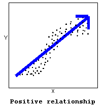
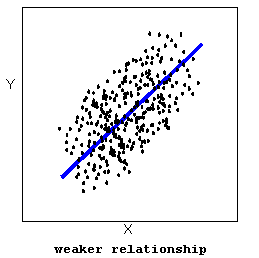
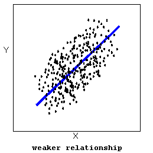
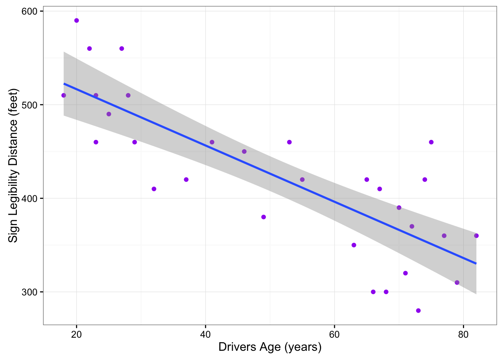

13.1 Interpreting the scatterplot
How do we explore the relationship between two quantitative variables using the scatterplot? What should we look at, or pay attention to?
Recall that when we described the distribution of a single quantitative variable with a histogram, we described the overall pattern of the distribution (shape, center, spread) and any deviations from that pattern (outliers). We do the same thing with the scatterplot. The following figure summarizes this point:

As the figure explains, when describing the overall pattern of the relationship we look at its direction, form and strength.
- The direction of the relationship can be positive, negative, or neither:
 

A positive (or increasing) relationship means that an increase in one of the variables is associated with an increase in the other.
A negative (or decreasing) relationship means that an increase in one of the variables is associated with a decrease in the other.
Not all relationships can be classified as either positive or negative.
The form of the relationship is its general shape. When identifying the form, we try to find the simplest way to describe the shape of the scatterplot. There are many possible forms. Here are a couple that are quite common:
Relationships with a linear form are most simply described as points scattered about a line:

Relationships with a curvilinear form are most simply described as points dispersed around the same curved line:
There are many other possible forms for the relationship between two quantitative variables, but linear and curvilinear forms are quite common and easy to identify. Another form-related pattern that we should be aware of is clusters in the data:

- The strength of the relationship is determined by how closely the data follow the form of the relationship. Let’s look, for example, at the following two scatterplots displaying positive, linear relationships:
 

The strength of the relationship is determined by how closely the data points follow the form. We can see that in the top scatterplot the data points follow the linear pattern quite closely. This is an example of a strong relationship. In the bottom scatterplot, the points also follow the linear pattern, but much less closely, and therefore we can say that the relationship is weaker. In general, though, assessing the strength of a relationship just by looking at the scatterplot is quite problematic, and we need a numerical measure to help us with that. We will discuss that later in this section.
Data points that deviate from the pattern of the relationship are called outliers. We will see several examples of outliers during this section. Two outliers are illustrated in the scatterplot below:

Let’s go back now to our example, and use the scatterplot to examine the relationship between the age of the driver and the maximum sign legibility distance. Here is the scatterplot:
library(ggplot2)
ggplot(data = signdist, aes(x = Age, y = Distance)) +
geom_point(color = "purple") +
theme_bw() +
labs(x = "Drivers Age (years)", y = "Sign Legibility Distance (feet)")
The direction of the relationship is negative, which makes sense in context, since as you get older your eyesight weakens, and in particular older drivers tend to be able to read signs only at lesser distances. An arrow drawn over the scatterplot illustrates the negative direction of this relationship:
ggplot(data = signdist, aes(x = Age, y = Distance)) +
geom_point(color = "purple") +
theme_bw() +
labs(x = "Drivers Age (years)", y = "Sign Legibility Distance (feet)") +
stat_smooth(method = lm)
The form of the relationship seems to be linear. Notice how the points tend to be scattered about the line. Although, as we mentioned earlier, it is problematic to assess the strength without a numerical measure, the relationship appears to be moderately strong, as the data is fairly tightly scattered about the line. Finally, all the data points seem to “obey” the pattern—there do not appear to be any outliers.